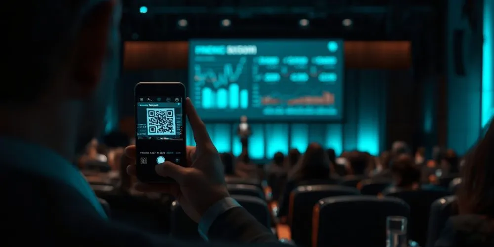

Rosa Sala
CEO de Nubart
La faille de sécurité dont personne ne parle dans la traduction simultanée par IA

L'accord de confidentialité est signé. Le contrat de traitement des données a été passé au crible. Pourtant, la porte de votre événement est peut-être grande ouverte.
Imaginez la scène : votre entreprise tient une conférence stratégique. L'ordre du jour couvre la stratégie produit pour l'année à venir, une acquisition en cours et des décisions tarifaires qui ne sont pas encore publiques. Vous avez fait tout ce qu'il fallait — vous avez vérifié le fournisseur de traduction par IA, examiné l'accord de traitement des données, confirmé que les serveurs se trouvent dans l'UE et vérifié que vos contenus ne serviront pas à entraîner des modèles. Votre service juridique est satisfait.
Ce que vous n'avez pas remarqué, c'est qu'un des participants a transféré son lien d'accès via Signal à un collègue qui ne figurait pas sur la liste des invités. Quelqu'un qui n'a jamais mis les pieds dans la salle écoute maintenant tout en temps réel, traduit dans sa langue.
Pas de piratage. Pas de fuite de données. Simplement une porte que personne n'a pris la peine de fermer à clé.
Une liste de contrôle complète... ou presque
Lorsque les entreprises évaluent des plateformes de traduction par IA pour des événements sensibles, la liste de vérification est généralement toujours la même :
- Le fournisseur signe-t-il un accord de confidentialité (NDA) ?
- Existe-t-il un accord de traitement des données (DPA) ?
- Les serveurs sont-ils situés dans l'UE ?
- Les enregistrements vocaux seront-ils utilisés pour entraîner des modèles d'IA ?
- Les transcriptions et traductions sont-elles supprimées immédiatement après le traitement ?
- Les noms et adresses e-mail des intervenants sont-ils traités de manière confidentielle ?
Ce sont des questions légitimes. Mais elles portent toutes sur ce qui arrive aux données une fois qu'elles sont dans le système — et passent à côté d'un risque encore plus fondamental : qui est autorisé à accéder au système. Les équipes de sécurité protègent la chaîne de traitement des données, mais oublient que le contrôle d'accès est une couche de sécurité à part entière.
Quand la simplicité devient une faille de sécurité
Un accès simple pour les participants l'est aussi pour les intrus.
Sur de nombreuses plateformes de traduction par IA, l'accès des auditeurs repose sur un code QR ou un lien partagé. Dans la plupart de ces systèmes, le code QR ne contient en réalité qu'un simple lien. N'importe qui avec un smartphone peut le photographier. N'importe qui qui reçoit ce lien — par accident ou délibérément — peut l'ouvrir. Dans un système de base avec lien QR, il n'y a aucune vérification d'identité intégrée : impossible de savoir si la personne qui écoute est un participant inscrit ou un concurrent confortablement installé à son bureau à l'autre bout du monde.
Nul besoin de compétences techniques particulières. Un smartphone et quelques secondes suffisent.
Certains fournisseurs ont réagi en ajoutant une couche de code d'accès. Mais un code d'accès partagé avec des participants légitimes peut être transmis aussi facilement que le code QR lui-même — c'est une deuxième clé d'accès présentant la même faiblesse.
D'autres optent pour la vérification par e-mail ou numéro de téléphone : les participants doivent communiquer leurs coordonnées et confirmer l'accès via un code envoyé sur leur appareil. Cela paraît plus robuste, mais cela échange un problème de confidentialité contre un problème de protection des données. Pour des événements impliquant des dirigeants, des investisseurs ou des parties prenantes externes, de nombreuses organisations répugnent — à juste titre — à transmettre à une plateforme tierce une liste d'adresses e-mail ou de numéros de téléphone sensibles.
Sans oublier le facteur humain : un collaborateur pourrait partager le lien d'accès dans un groupe WhatsApp ou le publier sur les réseaux sociaux sans y penser à deux fois — rendant ainsi la réunion de KPI accessible à un public imprévu.
Fermer la bonne porte
Soyons clairs : pour les conférences publiques, les salons ou les événements éducatifs, un accès ouvert est souvent parfaitement adapté. Dans ces cas, un code QR standard est la solution la plus simple et la plus pratique — et c'est exactement ce que Nubart propose. Le véritable enjeu apparaît lorsque l'accès lui-même fait partie de ce qui doit être protégé.
Pour ce type d'événements, Nubart utilise une technologie éprouvée depuis des années sur notre plateforme d'audioguides, Nubart GUIDE.
Nous proposons des cartes d'accès physiques avec des codes QR protégés par LWAC (Lightweight Access Control), une technologie développée par Nubart et protégée par plusieurs brevets internationaux. Contrairement à un code QR standard, un code LWAC est lié à l'appareil utilisé lors de sa première activation. Si l'utilisateur tente ensuite de partager son lien d'accès avec un tiers, le système détecte le changement d'appareil et refuse l'accès. L'accès demeure lié au premier appareil utilisé.
Point essentiel : LWAC ne requiert ni inscription, ni adresse e-mail, ni aucune donnée personnelle de la part des auditeurs. L'accès est anonyme, simple et sans contrainte pour les participants légitimes, et fermé à quiconque ne devrait pas être là.
AAucun système n'est totalement à l'abri d'un attaquant déterminé disposant de suffisamment de temps et de ressources. Mais LWAC relève considérablement la barre — en transformant une faille exploitable en quelques secondes en une opération nécessitant un effort réel et coordonné.
Les cartes LWAC sont disponibles avec une identité visuelle personnalisée ou en version à imprimer soi-même pour les événements organisés dans des délais courts.
En conclusion
Les fournisseurs de traduction par IA — Nubart y compris — investissent à juste titre dans la sécurité des infrastructures, la conformité au RGPD et la minimisation des données. Tout cela est important. Mais une chaîne n'est solide que jusqu'à son maillon le plus faible, et pour de nombreuses plateformes, ce maillon le plus faible est le lien d'accès caché derrière le code QR.
Avant de signer un nouvel accord de confidentialité ou de relire un nouveau contrat de traitement des données, il vaut la peine de se poser une dernière question : si quelqu'un transfère le lien d'accès maintenant, qu'est-ce qui empêche concrètement une personne non autorisée d'écouter ?
Nubart TRANSLATE propose à la fois un accès standard et un accès protégé par LWAC. Contactez-nous pour trouver la configuration adaptée à votre prochain événement.